Verbundelement Tabelle
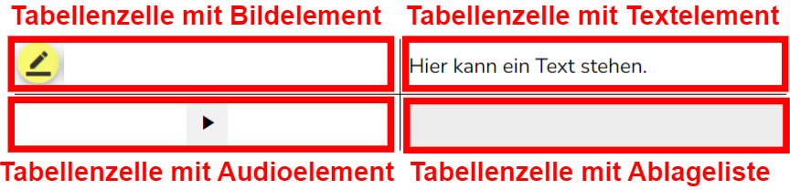
Mit einem Klick auf das (Verbund-)Element „Tabelle“ wird automatisch eine Tabelle mit jeweils zwei Spalten und Zeilen generiert. Im rechten Reiter „Eigenschaften“ können vielfältige Einstellungen im Tabellenelement („toolbox.table“) vorgenommen werden.
Neben der Anpassung der ID (hier: „table_1“) können mit einem Klick auf den „Elemente anpassen“-Knopf in einzelne Tabellenzellen Elemente aus dem Editor eingefügt werden.
Das sich öffnende Menü für die Auswahl der Tabellenelemente kann auch über einen Doppelklick auf die Tabelle geöffnet werden.
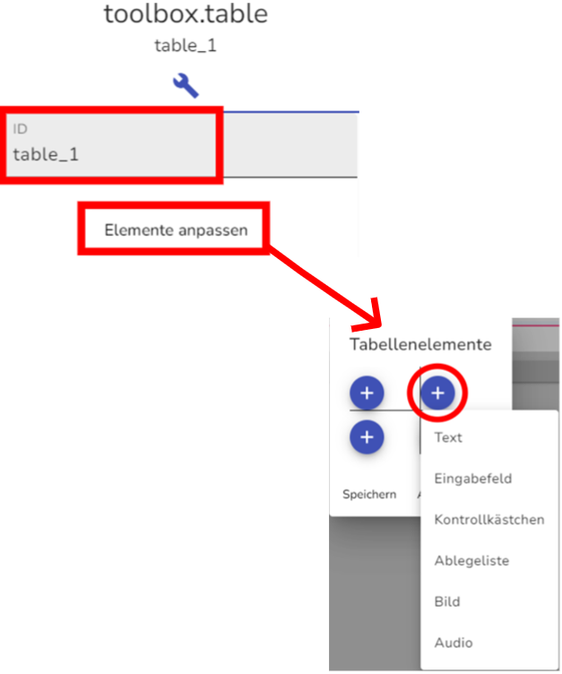
Nach einem Klick auf das gewünschte Element, wird in die Tabelle dieses Element eingefügt. Es lässt sich ein Element pro Tabellenzelle einfügen.
Jedes angeklickte Element, das in eine Tabellenzelle eingefügt wurde, kann im rechten Reiter „Eigenschaften“ separat editiert werden (siehe dazu in den Anleitungen).
Sind Elemente in Tabellenzellen eingefügt, kann ein gezielter Klick auf das Tabellenelement an sich (z. B. um es anzupassen) schwierig sein. Mit einem Klick auf den ersten pinken Knopf am Abschnitt, kann gezielter die Tabelle (hier wird dann die jeweilige ID angezeigt) ausgewählt werden.
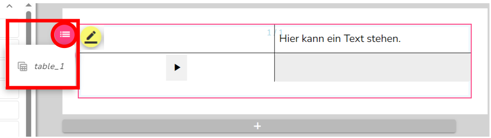
In den Eigenschaften der Tabelle (rechter Reiter) kann die Anzahl der Zeilen und Spalten sowie deren Anteile oder Bildpunkte angepasst werden.
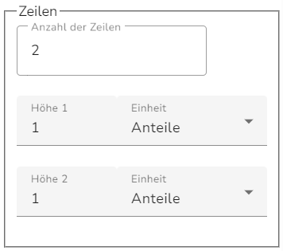
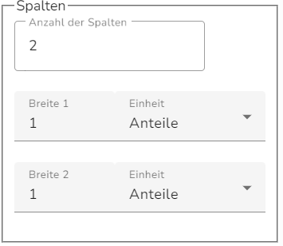
Außenkanten für die Tabelle lassen sich mit dem Setzen eines Häkchens bei „Tabellenränder zeichnen“ einfügen:
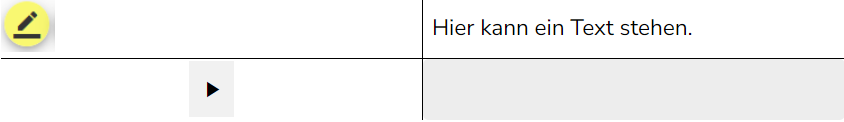

Darüber hinaus lässt sich mit der Maximalbreite einstellen, wie breit (in Pixeln) die Tabelle maximal sein soll. Dies kann nützlich sein, wenn die Eintragungen oder Elemente in den einzelnen Tabellenzellen sehr kurz sind. Die Breite der Tabelle ist automatisch bereits durch die Breite der Seite begrenzt.
Eine Maximalbreite lässt sich einstellen, indem ein Häkchen bei „Maximalbreite setzen“ gesetzt und anschließend die Maximalbreite eingetragen wird.
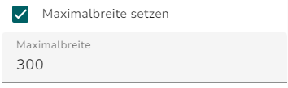
Beispiel:
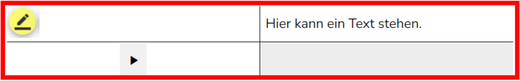
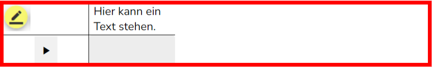
Elemente Editieren
Hier noch einmal die Anleitungen zum Editieren der verschiedenen Elemente:
Textelement editieren
Im rechten Reiter „Eigenschaften“ lässt sich das Textelement editieren.
Im ersten Teil lassen sich die ID (hier „text_1“) und mit einem Klick auf das Stift-Symbol auch der Text editieren.

Im zweiten Teil lässt sich die Anzahl der Spalten einstellen.
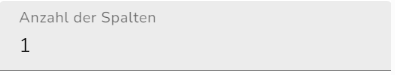
In manchen Fällen (z.B. bei Gedichten oder Zeitungsartikeln) kann es sinnvoll sein, die Anzahl der Spalten anzupassen:
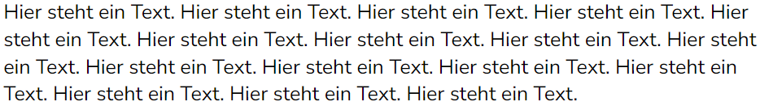
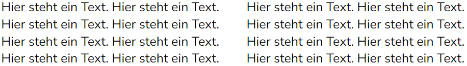
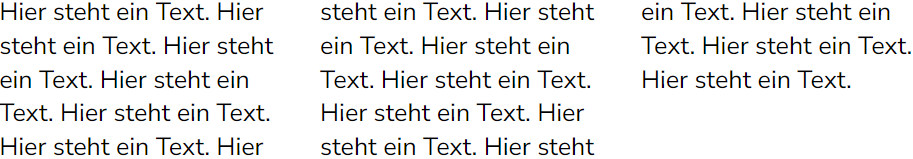
Ebenso lassen sich im Textelement Markierfarben einstellen. Dies ist nur bei Stimulustexten sinnvoll. In der Sekundarstufe I werden Markierfarben vor allem als Werkzeug zur Texterschließung eingesetzt. In der Grundschule findet diese Einstellung hauptsächlich im Rahmen eines (Markier-)Items, in der Regel mit der gelben Markierfarbe, Anwendung:
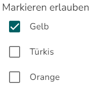
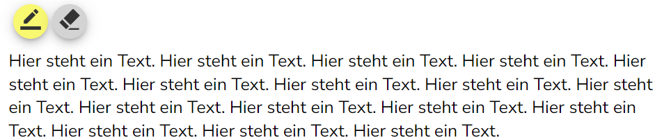
Der Radiergummiknopf wird mit dem Einstellen von mindestens einer Markierfarbe automatisch hinzugefügt und kann nicht entfernt werden.
Mit der Maximalbreite lässt sich einstellen, wie breit (in Pixeln) der Text maximal sein soll. Die Breite ist automatisch bereits durch die Breite der Seite begrenzt.
Eine Maximalbreite lässt sich einstellen, indem ein Häkchen bei „Maximalbreite setzen“ gesetzt und anschließend die Maximalbreite eingetragen wird.
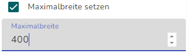
Beispiel Maximalbreite Textelement:
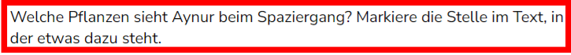
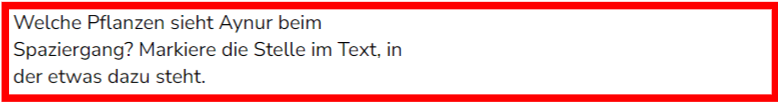
Eingabefeld editieren
Im rechten Reiter „Eigenschaften“ lassen sich nach einem Klick auf ein Eingabefeld die Einstellungen des angelegten Antwortfelds anpassen.
Im ersten Teil lassen sich die ID (hier „text-field_1“) und die Beschriftung anpassen. Beschriftungen werden im Normalfall hier nicht verwendet, sie funktionieren als Vorbelegung und bleiben auch während des Ausfüllens des Eingabefelds sichtbar.
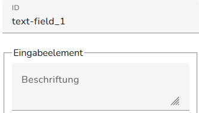
Weiter unten lassen sich ein Schreibschutz und eine Vorbelegung für Beispiele einstellen.
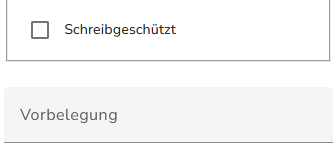
Außerdem kann die Maximalbreite des Eingabefelds angepasst werden. Die Voreinstellungen aus dem Assistenten sind hier „lang“ (ganze Zeile – keine Maximalbreite), mittel (500 px), kurz (250 px) und sehr kurz (125 px).
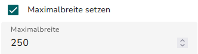
Kontrollkästchen
Im rechten Reiter „Eigenschaften“ lassen sich nach einem Klick auf ein Kontrollkästchen die Einstellungen anpassen.
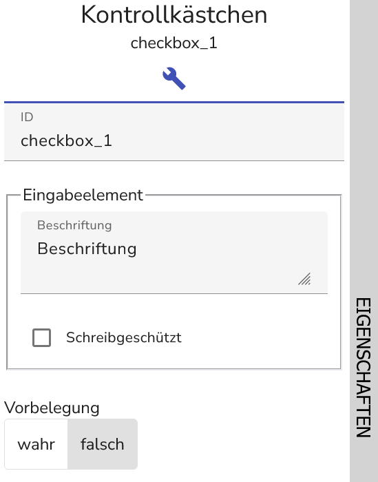
Im ersten Teil lassen sich die ID (hier „checkbox_1“) und die Beschriftung anpassen. Beschriftungen werden im Normalfall hier nicht verwendet, sie funktionieren als Vorbelegung und bleiben auch während des Ausfüllens des Eingabefelds sichtbar.
Weiter unten lassen sich ein Schreibschutz und eine Vorbelegung für Beispiele einstellen.
Ablageliste
Im rechten Reiter „Eigenschaften“ lassen sich nach einem Klick auf eine Ablageliste Elemente des angelegten D&Ds editieren.
Im ersten Teil lässt sich die ID der einzelnen Ablageliste (hier „drop-list_1“) anpassen.
Außerdem kann ein Schreibschutz für Beispiele aktiviert werden.
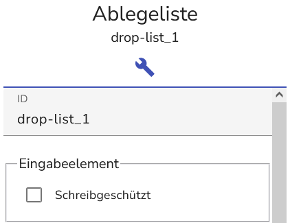
Ebenso lässt sich hier die Vorbelegung der Liste anpassen. Wie im Assistenten lassen sich mit dem +-Symbol Optionen hinzufügen, mit dem x -Symbol löschen und mit dem Schraubenschlüsselsymbol bearbeiten. Außerdem lässt sich durch Verschieben mit der Maus die Reihenfolge der Optionen ändern.
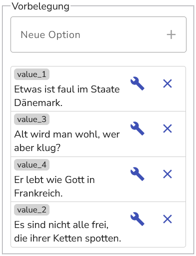
Weiter lässt sich einstellen, mit welchen Ablegelisten die jeweilige Ablageliste verbunden sein soll. Elemente können nur zwischen verbundenen Ablegelisten verschoben werden. Wurde eine Aufgabe mit dem Assistenten angelegt, sind die Ablegelisten automatisch richtig miteinander verbunden.
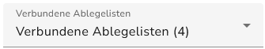
Außerdem kann die Ausrichtung der Elemente innerhalb einer Ablegeliste eingestellt werden. Mit der Einstellung „Dynamisch zentriert“ nehmen sich die Elemente genau so viel Platz wie sie brauchen, „vertikal“ legt die Elemente untereinander, „horizontal“ nebeneinander.
Auch hier sollten im Normalfall die von den Assistenten vorgegebenen Einstellungen beibehalten werden.
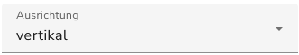
Als Letztes kann für die Ablegelisten noch eine feste Breite eingestellt werden. Dafür muss der Haken gesetzt werden und eine Breite in Pixeln angegeben werden.
Diese Funktionalität ist vor allem für Ablegelisten in Lückentexten relevant.
Bei mit den Assistenten angelegten Aufgaben sollte der Haken im Normalfall nicht gesetzt werden.
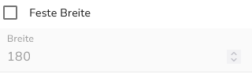
Bildelement
Im rechten Reiter „Eigenschaften“ lassen sich nach einem Klick auf das Bild Einstellungen vornehmen. Hier kann die ID („image_1“) angepasst werden. Ebenso kann mit einem Klick auf den „Medienquelle ändern“-Knopf im sich öffnenden Fenster die bereits eingefügte Grafik durch eine andere Grafik ersetzt werden.
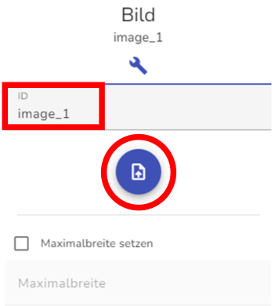
Mit der Maximalbreite lässt sich einstellen, wie breit (in Pixeln) die eingefügte Grafik maximal sein soll. Die Breite ist automatisch bereits durch die Breite der Seite begrenzt.
Eine Maximalbreite lässt sich einstellen, indem ein Häkchen bei „Maximalbreite setzen“ gesetzt und anschließend die Maximalbreite eingetragen wird.
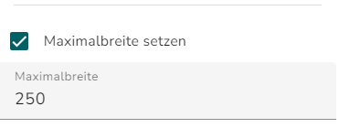
Beispiel Maximalbreite Bildelement:
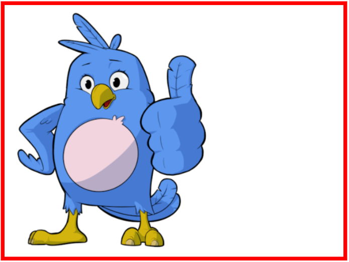
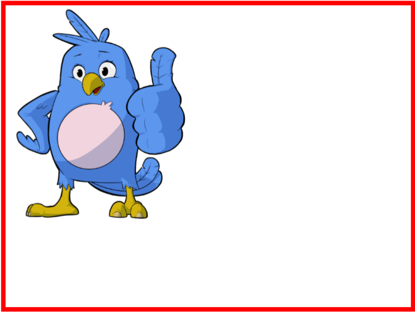
Audioelement
Im rechten Reiter „Eigenschaften“ lassen sich die Einstellungen des Audioelements bearbeiten.
Hier kann die ID („audio_1“) angepasst werden. Ebenso kann mit einem Klick auf den „Medienquelle ändern“-Knopf die Audio-Datei nachträglich geändert werden.
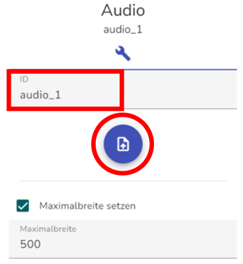
Mit der Maximalbreite lässt sich einstellen, wie breit (in Pixeln) das Audio maximal sein soll. Die voreingestellten 500 Pixel aus den Assistenten sind IQB-Standard und sollten nur in begründeten Ausnahmefällen angepasst werden. Sollte keine Maximalbreite erwünscht sein, kann das Häkchen bei „Maximalbreite setzen“ entfernt werden.
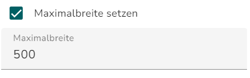